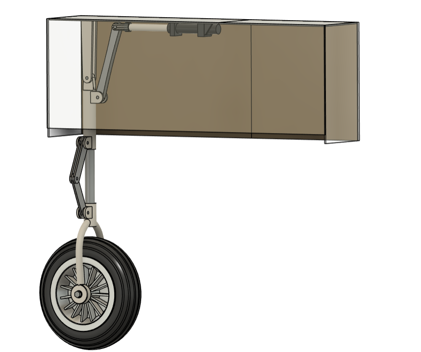
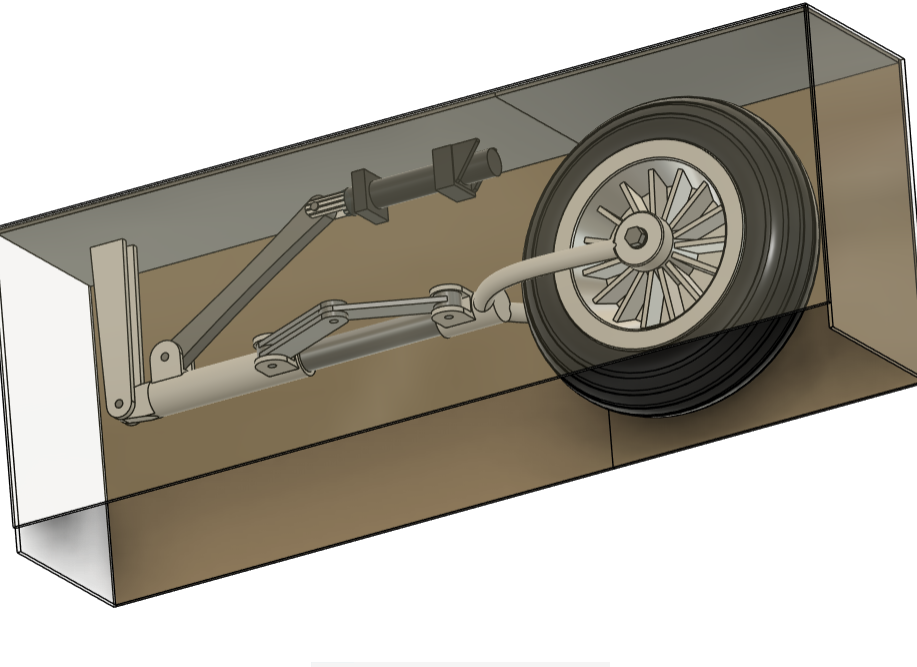
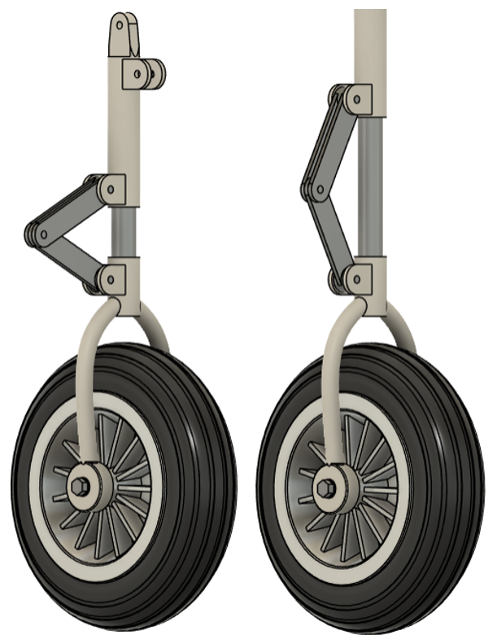
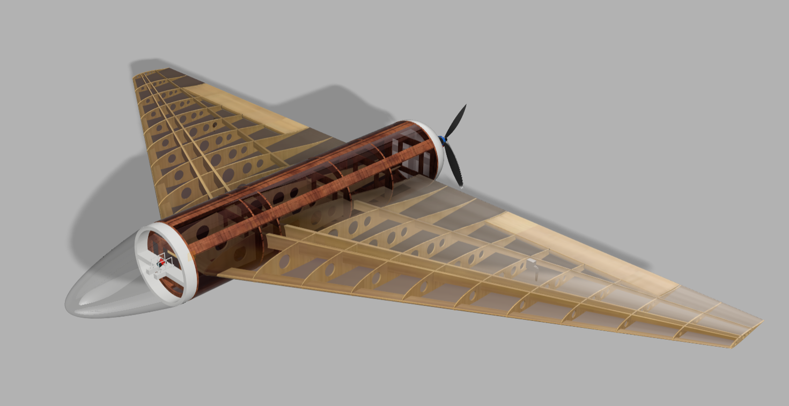
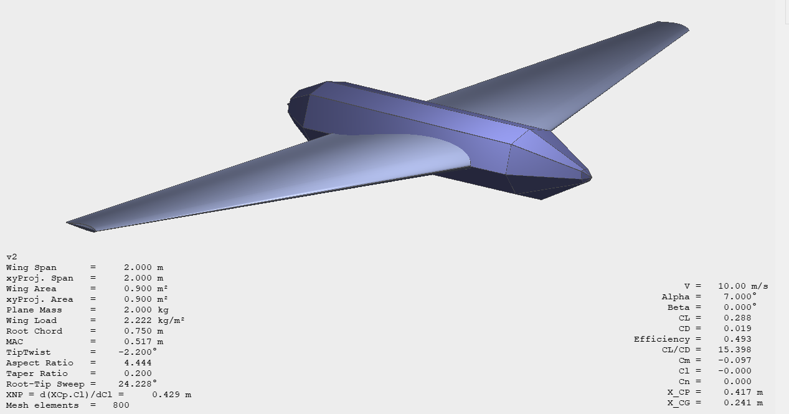
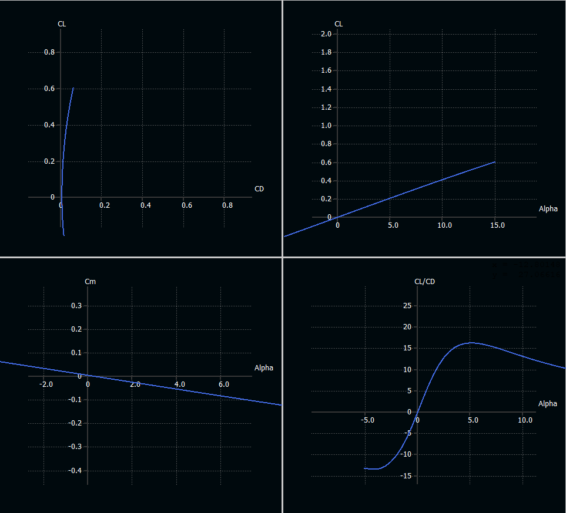
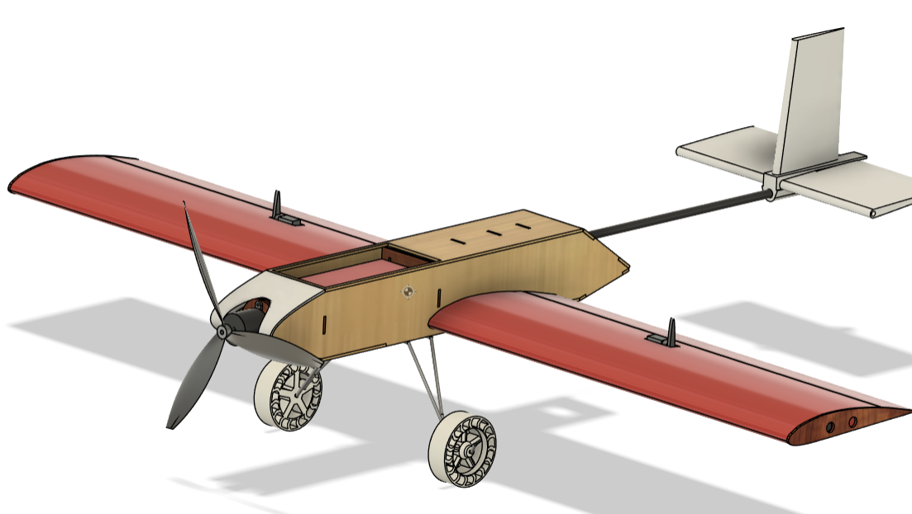
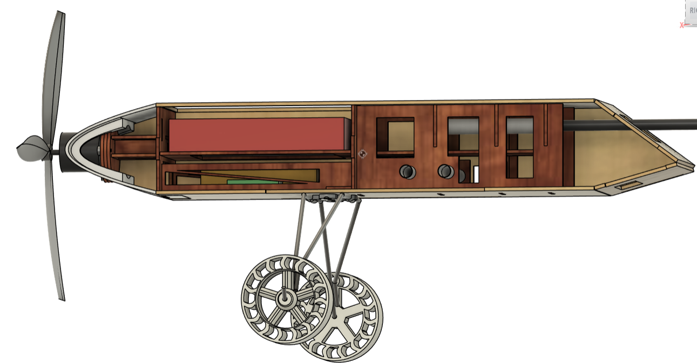
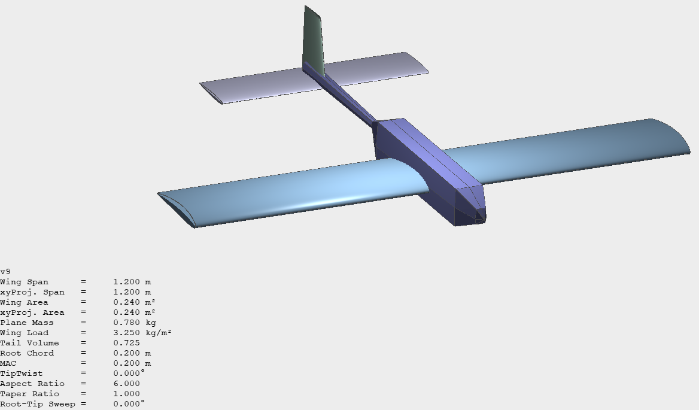

Here are some of my CAD designs.

Retractable front landing gear used on a small, lightweight aircraft with a tricycle wheel layout.
This design includes 20 components with motion joints that show how the suspension, wheel bearings and folding arm all operate.
For this project, I used Fusion 360 to demonstrate my intricate design skills as it incorporates many of the solid features like Revolve, Pipe, Mirror and Pattern.



A small, ultra-light flying wing made from balsa, plywood, clear acrylic and solar film designed to be remote control operated.
Its purpose is to survey areas that have suffered from natural disasters to find people trapped under debris using an FPV camera.
I first used XFLR5 to create a stable flying wing desgin with a wing span of 2 m and a static margin of around 20-25%. The mass is 2kg and has a cruise velocity of 13 m/s. The aerofoil is mh 60x which is ideal for a flying wing due to its stable characteristics and high lift to drag ratio.
I then imported the aerofoil into fusion 360 to create a model to show how the aircraft would be constructed. The wing utilises a ribs and spars configuration made from balsa and plywood to ensure it is light and cheap.
This project incorporated the use of flight performance software and more complex Fusion 360 features such as surface loft.



As part of my module at university, i had to design and build an RC plane that could carry a payload of 150g whilst competing with other students to make it the lightest.
All 59 components were designed to be made from PLA light, balsa, plywood or foam so that they could be 3D printed or laser/foam cut (the cheapest manufacturing methods available). All electronics were purchased online
First, I used a constraint diagram to find the most optimal wing area, cruise velocity and thrust-to-weight ratio. Then, I modelled the plane on XFLR5 to pick an ideal aerofoil and to create a design with a static margin of 25%. Next, I simulated the wing bending moments for the carbon fiber spars on Ansys to ensure the wings would not break during manouvers. Finally, all the compents were made and assembled on fusion 360 before being manufactured.
This project incorporated the use of flight performance software, complex Fusion 360 features (loft, sweep, revolve, pipe and mirror etc) and material simulation software (Ansys).

